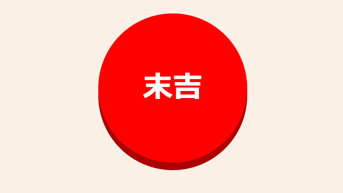
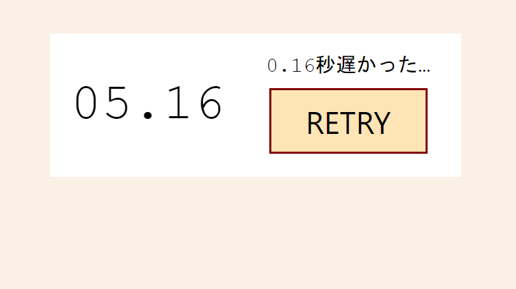

千葉大学大学院の修士１年、HAL0210です。
現在は23卒として就職活動を行っています。
私は就活前にHTML&CSS、JavaScriptを学習し、
当サイトを作成するに至りました。

千葉大学大学院の修士１年、HAL0210です。
現在は23卒として就職活動を行っています。
私は就活前にHTML&CSS、JavaScriptを学習し、
当サイトを作成するに至りました。

主にJavaScriptとPython
その他はHTML&CSS、Node.jsなど勉強中。
基本情報技術者試験に合格
TOEICやIT資格等に向け勉強中。

多い時で一日一冊以上のペースで読む。
短編推理小説を書いている。
ゼミでは化合物半導体の発光・発電について研究。
座学では情報工学や電気工学。
大学では推理小説同好会、マンドリンクラブに所属。担当楽器はマンドロンチェロ。現在は引退済。

スパイスからカレーを作る。
タンドリーチキンも作れる。
ドットインストール様のレッスン『JavaScriptでおみくじを作ろう』を参考におみくじのプログラムを作成しました。ボタンをクリックすることでその時点の運勢が表示されます。大吉や凶を引くと、ボタンの色が変化します。
ドットインストール様のレッスン『JavaScriptでストップウォッチを作ろう』を参考にタイマーゲームのプログラムを作成しました。STARTでタイマーを開始して、５～１０秒の範囲で指定される秒数を目標にSTOPでタイマーを止めましょう。（※PC推奨）
ドットインストール様のレッスンを通して学習した知識を用いて、間違い探しゲームを作成しました。最初にパネルの枚数と種類を選択して、表示されるパネルの中から一枚だけ異なるパネルをクリックしましょう。ひらがな、漢字、記号の問題が5ずつ用意されています。最後にはクリアタイムとミスタッチ数が表示されます。（※PC推奨）
Pythonのライブラリを用いて制作しました。BeautifulSoupでYahooニュースのスクレイピング、FlaskでWebアプリの構築、Herokuのサーバでデプロイしました。好きなカテゴリを選択すると、ニュースのトピックスが表示できます。また、ニュースのタイトルをクリックすると当該ページに飛べます。
| 氏名 | 川※治※ |
| 仮名 | HAL0210 |
| 生年月日 | 1999年2月10日 |
| 所在地 | 千葉県浦安市 |
| 現在の職業 | 大学院修士１年生 |
| 2017年 | 3月 | 私立東京学館浦安高等学校 | 卒業 |
| 4月 | 千葉大学 工学部 | 入学 | |
| 2021年 | 3月 | 〃 | 卒業 |
| 4月 | 千葉大学 博士前期課程 | 入学 | |
| 2023年 | 3月 | 〃 | 卒業予定 |
| 2020年 | 7月 | TOEIC-IPテスト | 625点 |
| 2021年 | 1月 | ITパスポート試験 | 合格 |
| 4月 | 基本情報技術者試験 | 合格 | |
| 5月 | TOEIC-公開テスト | 745点 | |
| 8月 | 情報セキュリティマネジメント試験 | 合格 | |
| 10月 | 応用情報技術者試験 | 受験予定 |
| 言語 | 経験レベル（自己評価） | 経験年数 | 出来ること |
|---|---|---|---|
| JavaScript | ★★★☆☆ | 半年 |
|
| HTML&CSS | ★★★☆☆ | 半年 |
|
| Python | ★★★☆☆ | 半年 |
|
私はプログラミング学習サイトや参考書を用いてプログラミングの勉強をしています。学部生時代に授業で触れた経験はありましたが、本格的に勉強を開始し始めたのは2021年2月(学部４年生)頃からなので、学習期間はあまり長くはありません。ですが、これまでの学業で培った学習能力を活かして着実に勉強を進めています。メインとして学習している言語はJavaScriptです。それに加えてHTML5&CSS3も学び、当サイトを作成しました。他言語ではPython、JavaScriptフレームワーク(Node.js等)の勉強も始めました。プログラミングで作成した成果物はWORKSに掲載しています。
大学では量子デバイス物性分野で半導体デバイスの研究を行っています。主に化合物半導体の発光・発電特性に関する研究を行っており、量子井戸や表面ナノ構造による特性の変化等を調べています。この研究により、半導体を用いた発光デバイスや太陽電池の効率上昇が期待されています。
大学での研究以外では、就職を意識して資格取得に向けた勉強などを行っています。就活までの目標として、現状の目標として『応用情報技術者試験』『簿記試験2級』を獲得したいと考えています。
古典文学から自己啓発書まで、色々な種類の本を幅広く読んでいるつもりです。時には一日一冊以上のペースでのめり込むこともあります。中でもミステリ小説が好物で、大学時代では推理小説同好会に所属し、短編推理小説を執筆したこともあります。好きな作家を幾人か挙げると、米澤穂信、森見登美彦、早坂吝です。
私は食べ物全般が好きなのですが、中でも好きなのがインドカレーです。私がカレーに興味を持ったキッカケは、大学一年の頃に人生で初めて食べたバターチキンカレーです。絶妙にマッチしたトマト、キチン、バターなどの旨味に感動しました。それから私は千葉県のカレー店を巡り、カレーの魅力に取り込まれました。最近ではレシピ本を参考にスパイスカレーやタンドリーチキンを自作しております。最近の自信作はサグパニール（ほうれん草とチーズのカレー）です。
ご訪問ありがとうございます。このサイトは私、HAL0210がHTML&CSSにより作成したポートフォリオサイトです。2021年9月時点で学習日数は一年未満です。成果物は以下のボタンからどうぞ。
WORKS(c) 2021 HAL0210.